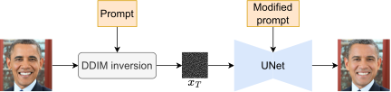
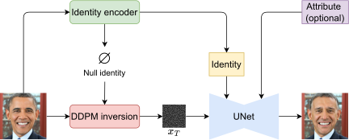

Recent text-to-image diffusion models have demonstrated remarkable generation of realistic facial images conditioned on textual prompts and human identities. However, existing prompt-based methods for removing identity-specific features rely on the subject being well-represented in the pre-trained model or require model fine-tuning.
This work analyzes the identity generation process and introduces a reverse personalization framework for face anonymization. It leverages conditional diffusion inversion, allowing direct image manipulation without text prompts. An identity-guided conditioning branch (IP-Adapter) generalizes beyond the model's training data.
The method supports attribute-controllable anonymization and achieves state-of-the-art balance between identity removal, attribute preservation, and image quality — the first diffusion-based anonymization approach capable of controlling age, gender, and ethnicity during anonymization.
Null-text Inversion can change identity only for subjects the model already knows, such as public figures like Obama (top row). Textual Inversion extends this capability to unknown subjects but requires fine-tuning (bottom row). Our method handles both cases without prior model knowledge or fine-tuning.
We introduce reverse personalization: applying a negative classifier-free guidance scale to steer generation away from identity-defining features, guided by a conditional inversion via IP-Adapter.


A negative CFG scale drives generation away from the reference identity, increasing anonymization strength. Positive scale reinforces identity (standard behavior).
Qualitative comparison against state-of-the-art face anonymization methods.
By substituting a simple text prompt during reverse personalization, the user can control age, gender, and ethnicity of the anonymized output — a first in diffusion-based face anonymization.
Component analysis demonstrating the contribution of each element of our reverse personalization framework. Each strip shows (left to right): Input, Ours, DDIM, InstantID.
@InProceedings{Kung_2026_WACV, author = {Kung, Han-Wei and Varanka, Tuomas and Sebe, Nicu}, title = {Reverse Personalization}, booktitle = {Proceedings of the IEEE/CVF Winter Conference on Applications of Computer Vision (WACV)}, month = {March}, year = {2026}, pages = {988-999} }